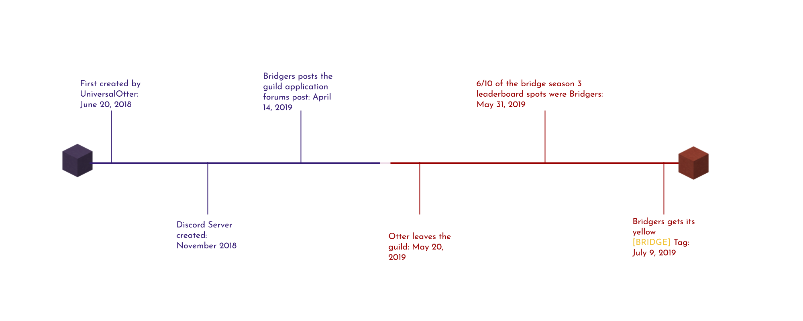
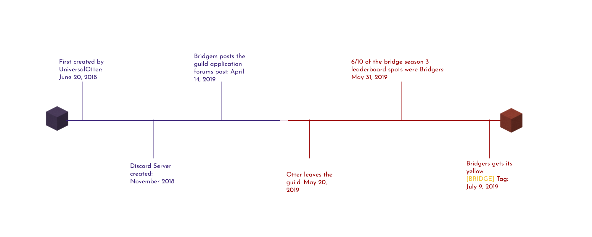

[BRIDGE]
About Us
The Bridgers is a Hypixel Guild mainly focusing on the duels game "The Bridge." It was started by UniversalOtter, who later left the guild and handed it over to ApplePies. We are currently the #1 Duels guild and are level 45.

The Bridgers is a Hypixel Guild mainly focusing on the duels game "The Bridge." It was started by UniversalOtter, who later left the guild and handed it over to ApplePies. We are currently the #1 Duels guild and are level 45.
